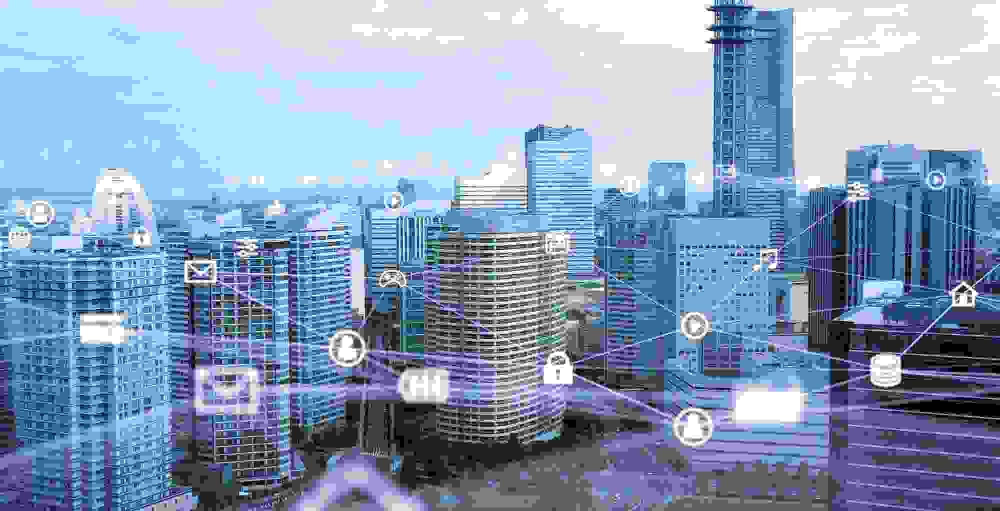

Transforming Spaces: The Impact of Smart Building Technology
Discover how smart building technology transforms spaces, enhancing efficiency, comfort, and sustainability for modern living and working environments.
March 10, 2025 · 4 min read
TL;DR: Smart building tech is transforming how CRE spaces feel and perform. Owners use it to differentiate properties — but only when implementation runs on owner-controlled infrastructure. Otherwise, the smart features are differentiators for the vendor's roadmap, not the owner's portfolio.
As our world continues to evolve technologically, our environments as a whole begin to reflect advanced and connected spaces. From our homes to the buildings we work and exist in every day, these advancements have had a profound impact on how we not only engage but also experience comfort, efficiency, and security.
Businesses, landlords, and tenants are experiencing firsthand how buildings IoT and automation create smarter, safer, and more valuable spaces. This blog explores the real-world impacts of smart building systems and what the future holds for this rapidly evolving technology.

Real Estate Value and Cost Savings in Action
Property owners and investors adopting smart building management systems are witnessing measurable improvements in property value. Take, for example, buildings that have integrated smart building IoT solutions for energy management. By using automated lighting, HVAC optimization, and occupancy sensors, these properties report an average of 20-30% reduction in energy costs. Lower operating expenses translate to higher property valuations and better returns for owners.
For tenants, smart building systems mean lower utility costs and enhanced workplace comfort, making these spaces more attractive and competitive in the market. One study found that smart-equipped office buildings have 5-10% higher occupancy rates than traditional buildings, demonstrating the market demand for high-tech, energy-efficient spaces.
The Tangible Benefits of Smart Building Technology
The impact of smart building IoT goes beyond cost savings. Here are some of the most visible benefits:
- Energy Efficiency in Action: Smart thermostats and automated energy controls help cut down excessive power usage, leading to lower bills and increased sustainability. A study by the U.S. Department of Energy found that smart building technologies can reduce overall energy consumption by 29%.
- Predictive Maintenance Success Stories: AI-driven smart building IoT solutions can predict when systems will fail, preventing costly breakdowns. In a recent case study by IBM, a commercial complex saved $100,000 in repair costs by using IoT sensors to detect HVAC issues before they escalated.

- Enhanced Security with Smart Access: Commercial buildings using smart building systems have reduced security breaches by up to 40% by integrating facial recognition, biometric access, and AI-powered surveillance, according to a report by PropTechOS.
- Better Tenant Experiences: With smart building management systems, tenants enjoy automated climate control, keyless entry, and seamless internet connectivity—resulting in higher satisfaction and lease renewals.
- Actionable Data for Smarter Decision-Making: Property managers utilizing data management solutions gain real-time insights into building performance, optimizing resources, and improving operational strategies. A report by McKinsey found that data-driven smart buildings improve operational efficiency by up to 20%.
How Smart Technology is Boosting Marketability
The growing demand for tech-enhanced spaces is evident in the way businesses and tenants prioritize commercial real estate services that integrate IoT solutions. Buildings equipped with smart building management systems are securing premium tenants faster and at higher rental rates. The ability to offer features like business intelligence services & solutions that streamline operations and enhance sustainability gives these properties a distinct competitive advantage.
For example, a New York-based commercial building implemented smart building IoT solutions, improving energy efficiency and security. According to a CBRE study, the result was a 15% increase in lease renewals and a noticeable boost in tenant satisfaction scores.
Sustainability: Smart Buildings Making a Real Difference
Sustainability is a key driver of smart building adoption, with real-world benefits such as:
- Energy Savings That Matter: According to the International Energy Agency (IEA), smart HVAC systems have reduced power consumption in commercial buildings by an average of 25%.
- Water Conservation at Scale: IoT-driven smart meters have helped large facilities cut water usage by 30%, reducing costs and environmental impact, as reported by Smart Energy International.
- Green Building Certifications: Properties integrating smart building IoT solutions are achieving LEED and BREEAM certifications faster, increasing their market value and appeal.
The Next Wave: Future Trends in Smart Building Technology
The next generation of smart building technology is already shaping the industry. Some of the most exciting developments include:
- AI-Powered Autonomous Buildings: AI-driven automation that enables buildings to self-regulate energy, maintenance, and security.
- 5G-Enabled Smart Spaces: Enhanced connectivity allowing real-time monitoring and faster system responses.
- Digital Twins for Simulated Testing: Virtual models of buildings that provide real-time insights for predictive maintenance and resource optimization.
- Advanced Occupancy Analytics: Motion and environmental sensors that adapt office layouts based on actual usage, improving space efficiency.

Conclusion
The impact of smart building technology is visible in every aspect of real estate—from lower operational costs to increased sustainability and improved tenant experiences. By integrating smart building management systems, property owners and businesses can unlock new efficiencies and future-proof their investments.
As smart building IoT solutions continue to evolve, the commercial real estate industry must embrace these innovations to stay competitive. The shift is already happening—those who adapt now will lead the way in creating more intelligent, efficient, and valuable spaces for years to come.
Ready to Optimize Your Building?
Discover how your property can benefit from smart building technology with OpticWise’s comprehensive Building Audit. Our experts analyze your building’s performance and identify opportunities to enhance efficiency, security, and sustainability. Schedule your audit today!

Your Next Step
Complimentary CRE Data & Digital Review Session
One building. Map who owns what, where data lives, and where operational burden stacks up vs your KPIs.